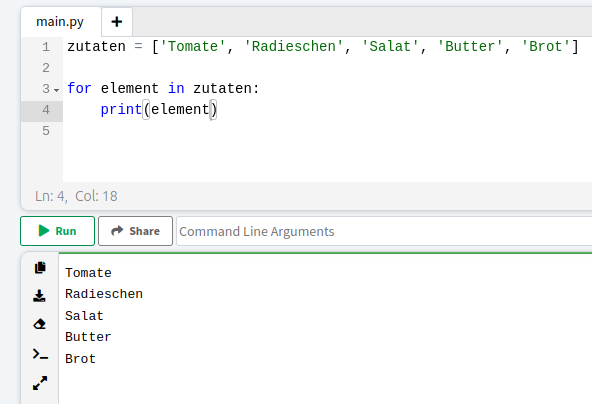
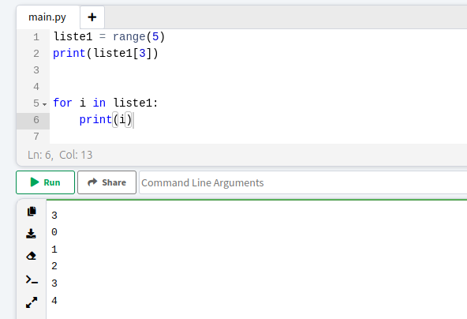

Oft wollen wir, dass der Computer eine Aufgabe mehrfach ausführt. Für das Pfannkuchenbacken zum Beispiel, müssten wir eine Menge der Schritte doppelt schreiben, wenn wir am Ende 10 Pfannkuchen haben wollen. Damit wir die Befehle nicht mehrfach schreiben müssen, gibt es FOR-Schleifen in Python. Wenn ein Computer dieses Signalwort sieht, weiß er, dass die Befehle innerhalb der Schleife mehrfach ausgeführt werden sollen.
Eine Schleife führt für eine bestimmte Anzahl Wiederholungen (for x) immer wieder dieselben Befehle aus. Die Anzahl an Durchläufen wird anhand einer Listen bestimmt, für jedes Element der Liste wird dann ein Durchlauf ausgeführt. Deshalb lautet der Sinalbefehl für eine for-Schleife auch: for in Liste.
In dem oben gezeigten Beispiel wird für jede Zutat in der zuvor definierten Liste die Zutat ausgegeben wird. Der Computer führt den Befehl in der Schleife solange aus, bis das Ende der Liste erreicht ist.
Wenn die For-Schleife genutzt wird, um bestimmte Befehle mehrfach auszuführen, aber der Inhalt der Liste keine Bedeutung hat, bietet es sich an, eine temporäre Liste mit dem range-Befehl, der hier schon beschrieben wurde, anzulegen. Der Befehl hierfür sieht dann wie folgt aus, dabei wird der Buchstabe i als Platzhalter verwendet, das hat sich so eingebürgert in der Informatik.
Wenn du Bibliotheken und Zufall in Python kennst, kannst du mit For-Schleifen selber ein Zahlen Raten Spiel programmieren.
Weiter zu Zufall in Python